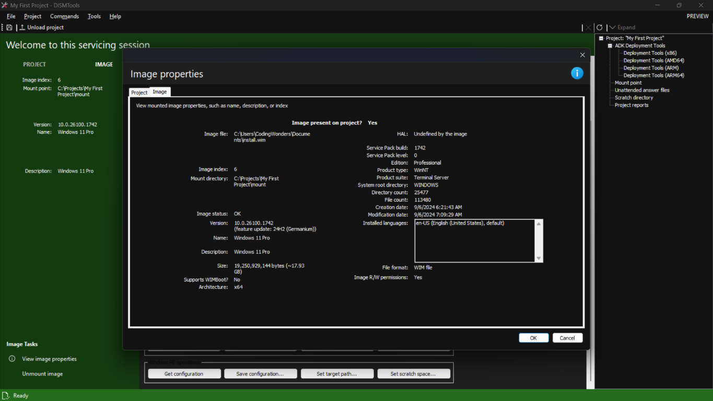

Vamos tornar a sua imagem do Windows sua.
Conhecendo a nossa imagem montada
Antes de proceder à modificação da nossa imagem do Windows, primeiro vamos recolher algumas informações sobre ela, para sabermos com o que estamos a trabalhar. Isto pode ser feito com os vários diálogos de informação disponíveis neste programa. Obteremos informações gerais sobre a nossa imagem, como o seu nome e tamanho, indo aqui (mude primeiro para a seção IMAGE no lado esquerdo):

Veremos a seguinte informação:
Esta informação será atualizada depois de confirmar (commit) a imagem, mas começaremos por fazer alterações primeiro.
Modificando a imagem do Windows ao nosso gosto
Executaremos uma série de modificações na nossa imagem do Windows. Imagine este exemplo: estamos a trabalhar numa imagem do Windows 11 Pro que depois iremos implantar nos computadores da nossa organização. Pretendemos o seguinte:
- Suporte incorporado para uma imagem do Windows Subsystem for Linux (WSL) e para máquinas virtuais com Hyper-V
- Redução de bloatware, mas na quantidade suficiente para não quebrar o sistema alvo
A imagem com a qual começamos está bastante desatualizada, por isso também a iremos atualizar. Este tour separa cada tarefa numa secção própria, para que possa seguir o processo mais facilmente.
Ativando as funcionalidades
Tanto o Hyper-V como o Windows Subsystem for Linux são funcionalidades que podem ser ativadas numa imagem do Windows. Para ver o estado em que se encontram, clicaremos no botão "Obter informações da funcionalidade...". Veremos uma lista de todas as funcionalidades na imagem. Para reduzir os resultados da pesquisa, basta digitar a consulta na caixa de pesquisa, assim:

Neste exemplo, ambas estão desativadas, por isso vamos ativá-las. Podemos fazer isto clicando no botão "Ativar funcionalidade...". Depois, selecionamos as funcionalidades a ativar, mais quaisquer opções, e clicamos em OK. Neste exemplo, continuaremos com as seguintes opções:

Aqui está um resumo rápido das opções selecionadas:
- Ativar todas as funcionalidades pai ajuda-nos a poupar tempo ativando todas as funcionalidades relacionadas com as que selecionámos. Por exemplo, é mais rápido selecionar
Microsoft-Hyper-V-Alle ativar esta opção do que selecionar todas as funcionalidades do Hyper-V uma a uma. Ao fazer o primeiro, todas serão ativadas de uma só vez - Confirmar (commit) a imagem após ativar funcionalidades irá automaticamente gravar as alterações na nossa imagem após ativar as funcionalidades. É uma boa prática confirmar as alterações após cada tarefa na imagem, porque será mais fácil reverter para uma versão anterior se algo não correr bem
Nota:
Uma funcionalidade pode aparecer nesta lista como Removed. Nesse caso, é necessário fornecer uma origem. A origem, em muitos casos, é a pasta sxs do suporte de instalação do Windows. Monte o ficheiro ISO e especifique a pasta sources\sxs no diálogo de seleção de pastas. Faça este processo assim:

No nosso exemplo, não é necessário, mas poderá ser quando fizer o procedimento sozinho.
Para que isto funcione, tanto a sua imagem do Windows como o suporte de instalação devem ter a mesma versão. Por isso é recomendado fazer isto primeiro. Caso contrário, terá de esperar até instalar a sua imagem do Windows para ativar uma funcionalidade usando o Windows Update, ou usar suporte atualizado.
Depois da tarefa concluída, pode voltar ao diálogo de informações de funcionalidades e verificar o estado das funcionalidades que selecionou. Prosseguiremos agora com a atualização da imagem do Windows.
Adicionando os pacotes
Agora, vamos atualizar a nossa imagem com os pacotes de atualização mais recentes. Pode descarregar estes do Microsoft Update Catalog. Depois de isto feito, clicaremos no botão "Adicionar pacote...". Em seguida, selecione a localização onde os ficheiros de atualização se encontram. Finalmente, selecione os que deseja instalar e clique OK:

Neste exemplo, queremos adicionar todos os pacotes encontrados. É melhor adicionar pacotes em pequenos lotes, pois a operação é bastante demorada, e também iremos confirmar as alterações após cada lote. Prepare bebidas e snacks, ou faça outras coisas, enquanto a tarefa é executada.
Nota:
O DISMTools suporta a adição de ficheiros CAB e ficheiros MSU. Para utilizadores mais avançados, também suporta a adição de manifests independentes de atualizações.
Pode mais tarde ir ao diálogo de informações de pacotes para ver os pacotes recentemente instalados. Pode saber mais sobre esta tarefa na documentação de Ajuda.
Removendo aplicações da Store
Uma das muitas formas de bloat no Windows são as aplicações da Loja que talvez não queira. Embora possa removê-las depois de instalar o sistema, também pode instalar o SO com essas aplicações já removidas. Para isso, clicaremos no botão "Remover pacote AppX". Neste diálogo, selecionamos as aplicações a remover e clicamos em OK:

Nota:
Tenha a certeza do que vai remover. Componentes do sistema no Windows dependem de algumas destas aplicações atualmente, e poderá quebrá-los se não tiver cuidado. Pode procurar os nomes das aplicações, que encontra na segunda coluna, online para determinar se deseja removê-las.
Pode executar mais tarefas se desejar, mas iremos continuar com o passo final: implantação do sistema operativo.
Concluí. E agora?
Depois de personalizar a sua imagem, pode continuar de 2 maneiras:
- Por conta própria, ou
- Com ajuda da etapa restante deste tour
Se quiser continuar com o tour, clique no botão Etapa 3 no canto superior direito para ver a sua versão em texto.
Se preferir continuar o tour em formato de vídeo, clique aqui.
Se se perdeu nalguns passos, pode voltar para a Etapa 1. Depois, prossiga para a Etapa 3.